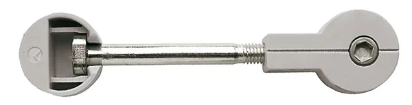
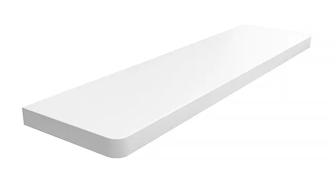

Opis produktu
Parapet MDF jest produktem drewnopodobnym, powstałym w wyniku sprasowania włókien drzewnych z dodatkiem związków organicznych, łączonych i utwardzonych w warunkach wysokiego ciśnienia i temperatury. Płyta MDF jest wilgocioodporna. Jest bardzo dobrym substytutem dla drewna naturalnego. Nie zawiera żadnych strukturalnych niedoskonałości typu sęki, złe ułożenie włókien, wiek rdzeni, pęknięcia, czy też przeżywiczenia. Parapet MDF w połączeniu z okleiną PVC powstaje pod wysokim ciśnieniem oraz w wysokiej temperaturze, przez co produkt staje się wytrzymały na otarcia oraz zarysowania. Wszystkie parapety są dwustronnie laminowane (spód - laminat w kolorze białym). Szeroka gama kolorystyczna parapetów dostępna w ofercie pozwala dobrać parapet do niemalże każdego okna.
Parametry techniczne i charakterystyka
- ✓maksymalna długość parapetów (w jednym elemencie): 250 cm
- ✓parapety powyżej 250 cm łączone od spodu specjalnym łącznikiem:

- ✓maksymalna szerokość: 90 cm
- ✓dostępne grubości: 2 cm, 2,5 cm, 3 cm i 4 cm (tolerancja (+/-) 2 mm)
- ✓każdy parapet wykonywany jest pod indywidualny wymiar podany przez klienta
- ✓możliwość wykonania wcięć wg własnego projektu
- ✓możliwość niestandardowego wykończenia rantów
Kolorystyka

- Biały mat
- Biały połysk
- Calacatta
- Marmur
- Białe drewno
- Popiel
- Dąb bielony
- Dąb halifax biały
- Beton
- Aluminium 58
- Grenada
- Antracyt mat
- Czarny
- Wenge deska
- Ciemny orzech
- Orzech
- Orzech lanzado
- Złoty dąb
- Dąb antyczny
- Dąb halifax tabac
- Dąb ribbeck
- Dąb riviera
- Dąb rustico
- Woodec
- Winchester
- Dąb artisan
- Dąb naturalny
- Dąb halifax naturalny